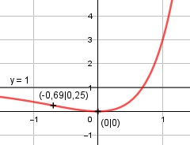

Aufgabe 151 f(x) = (ex - 1)2 = e2x - 2 * ex + 1 Ketten- und Summenregel erste Ableitung: f'(x) = 2 * e2x - 2 * ex Ketten- und Summenregel zweite Ableitung: f''(x) = 4 * e2x - 2 * ex Ketten- und Summenregel dritte Ableitung: f'''(x) = 8 * e2x - 2 * ex Definitionsbereich: -∞ < x < ∞ Waagerechte Asymptote: f(x) = (ex - 1)2 geht gegen 1 für x --> -∞ Wertebereich: f(x) wird dann am kleinsten, wenn x = 0 (Extrempunkt) f(0) = 0 --> 0 ≤ f(x) < ∞ Symmetrie zur y-Achse bzw. zum Punkt (0|0): f(-x) = (e-x - 1)2 ≠ f(x) --> keine Achsensymmetrie -f(-x) = -(e-x - 1)2 ≠ f(x) --> keine Punktsymmetrie Nullstellen: f(x) = 0 (ex - 1)2 = 0 |ⱱ ex - 1 = 0 |+1 ex = 1 e-x = e0 Exponentenvergleich: -x = 0 |+x x = 0, f(0) = (e0 - 1)2 = 0 N(0|0) Schnittpunkt mit der y-Achse: x = 0 f(0) = 0 Sy(0|0) Extrempunkte: f'(x) = 0 2 * e2x - 2 * ex = 0 2ex * (ex - 1) = 0 | :2ex ex - 1 = 0| +1 ex = 1 ex = e0 Exponentenvergleich: x = 0, f(0) = 0 f''(0) = 4 * e2*0 - 2 * e0 > 0 --> Tiefpunkt (0|0) Wendepunkte: f''(0) = 0 4 * e2x - 2 * ex = 0 2ex * (2ex - 1) = 0 |:2ex 2ex - 1 = 0|+2 2ex = 1 |:2 ex = 0,5 |ln ln ex = ln 0,5 x * ln e = ln 0,5 x = -0,69 f(-0,69) = (e-0,69 - 1)2 = 0,25 f'''(-0,69) = 8 * e2*(-0,69) - 2 * e-0,69 ≠ 0 --> WP(-0,69|0,25) Graph:
